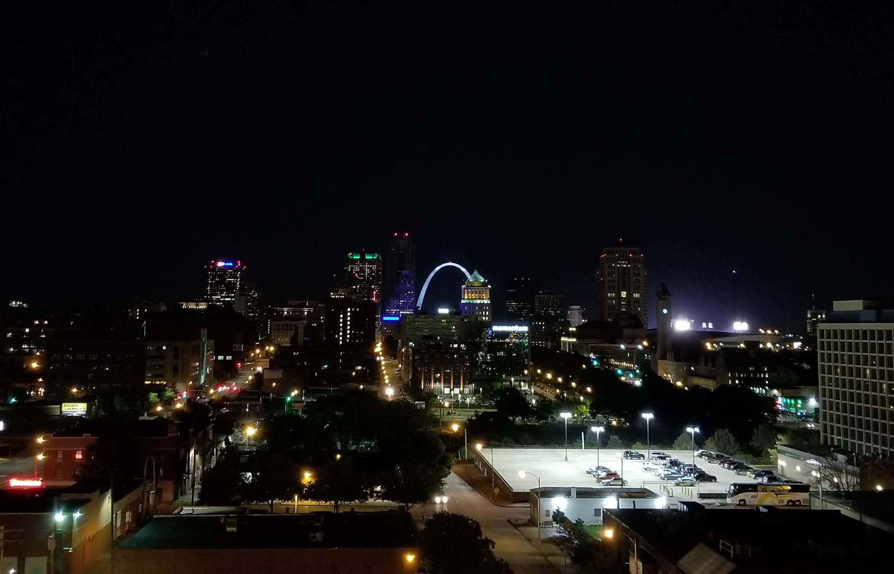
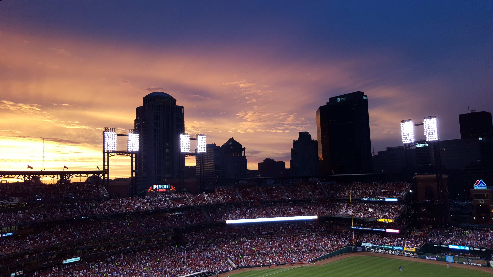
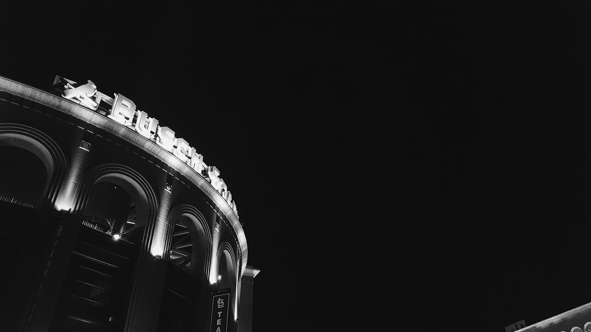
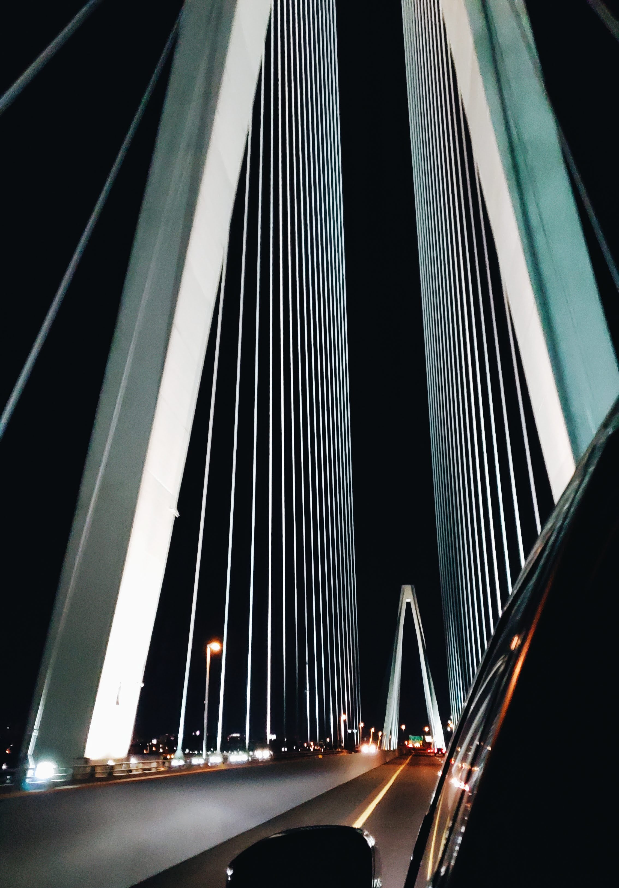
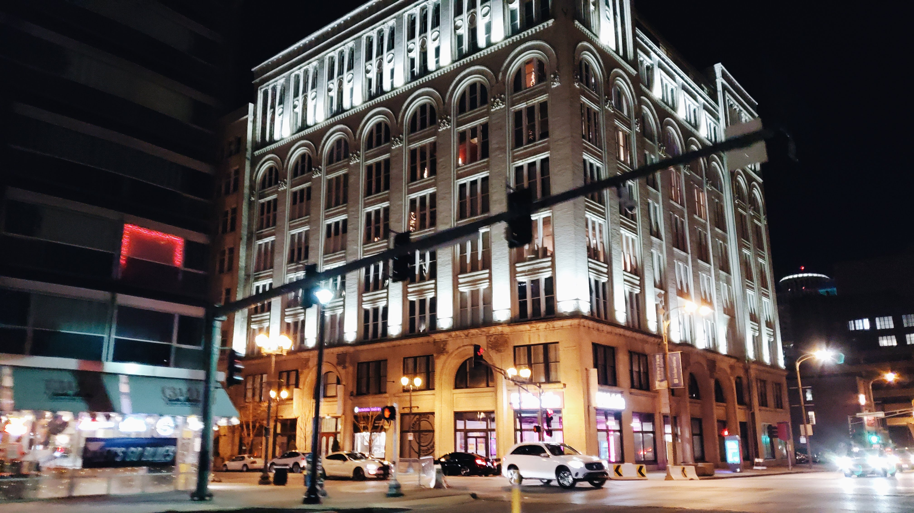
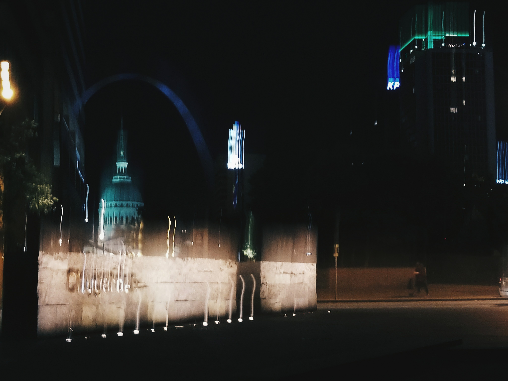
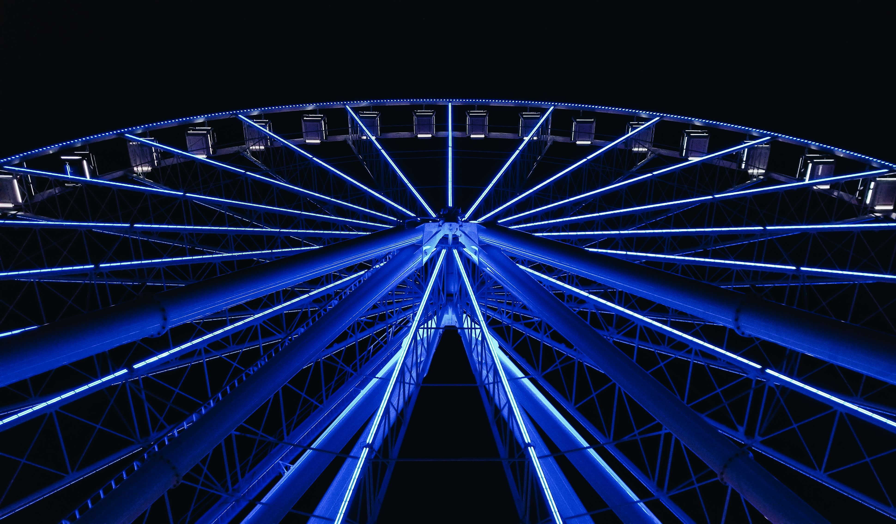
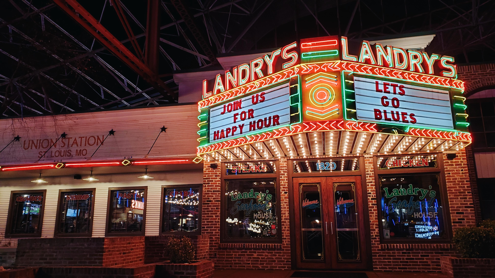
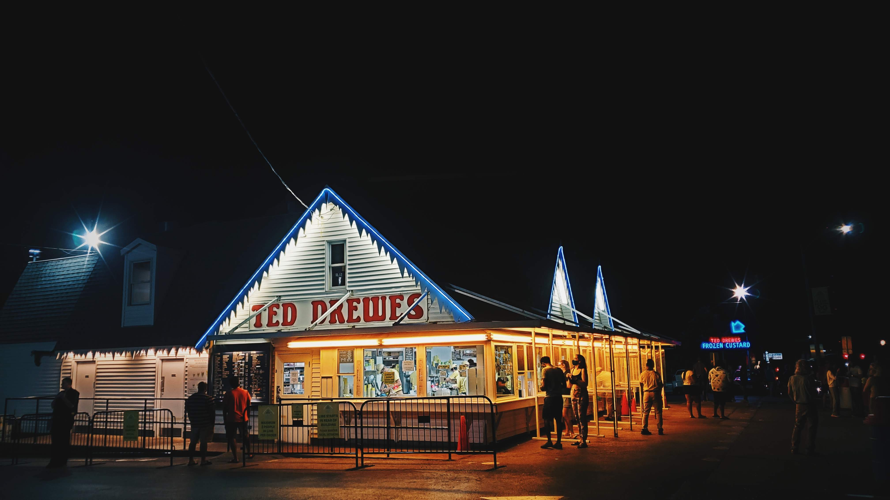

These images all display different aspects of St. Louis night scenes using light as a decorative element to the images’ creations. As a born-and-raised St. Louis area resident, I have seen these nightly images of St. Louis in many different occasions and ways throughout my lifetime. I want to display my own photography from my recent years photographing moments of night scenes in St. Louis to give others a sense of how I see the beauty of my area at night.

The St. Louis Arch shines within the St. Louis night skyline on Sept. 11, 2018, at Olive Street in St. Louis, Mo. The St. Louis skyline can be seen from long distances and from many angles across the city, and many prominent St. Louis buildings can be seen and highlighted in the skyline by their noticeable lights and reflections.

The sun sets behind an illuminated Busch Stadium full of fans on May 24, 2016, at Busch Stadium in St. Louis, Mo. The lights from the stadium illuminate the game as fans enjoy an evening game of baseball, while major buildings from Downtown St. Louis can be seen from a stadium seat view.

Decorative lights illuminate a Busch Stadium sign on Nov. 1, 2018 at Clark St. in St. Louis, Mo. The sign can be seen for many blocks surrounding the area as a signifier of the stadium’s presence in the Downtown St. Louis area.

Decorative lights illuminate the structure of the Stan Musial Veterans Memorial Bridge on Dec. 26, 2020, at the Stan Musial Veterans Memorial Bridge in St. Louis, Mo. The lines of the bridge’s structural parts can be seen for miles around Downtown St. Louis area at night when illuminated against a dark sky.

An apartment building is decoratively lit on Dec. 26, 2020, in Downtown St. Louis, Mo. The building gives an artistic appeal to the area it is located in, with city lights and busy cars passing by its placement.

The St. Louis Citygarden, Old Courthouse and Arch encompass a blurred night scene on Sept. 8, 2017, at Clark Ave. in St. Louis, Mo. While taking night photographs in the area, lights in the surrounding area were distorted in an artistic way to show their involvement in the night city scene of that evening.

The St. Louis Wheel glows in blue lights on Nov. 9, 2019, at St. Louis Union Station in St. Louis, Mo. The Wheel has a multitude of changing light patterns displayed on its infrastructure for different events, holidays and seasons in the area.

The neon sign for Landry’s displays a range of color on Dec. 21, 2019, at St. Louis Union Station in St. Louis, Mo. This sign is a restoration of older neon signs used in the past for the restaurant, and the marquee on the sign changes depending on local events and the season.

Ted Drewes Frozen Custard stands illuminated with neon lights on June 13, 2020, at Chippewa St. in St. Louis, Mo. The classic Ted Drewes lighting includes the traditional name of the shop and fake icicles hanging from the peaks of the building's shape.